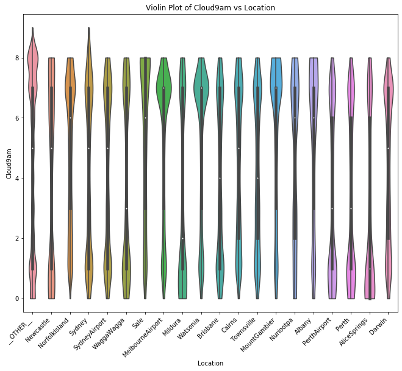
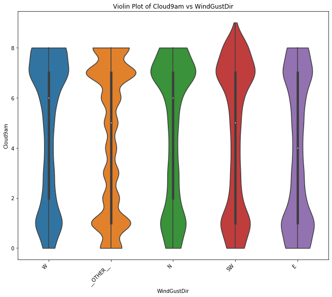
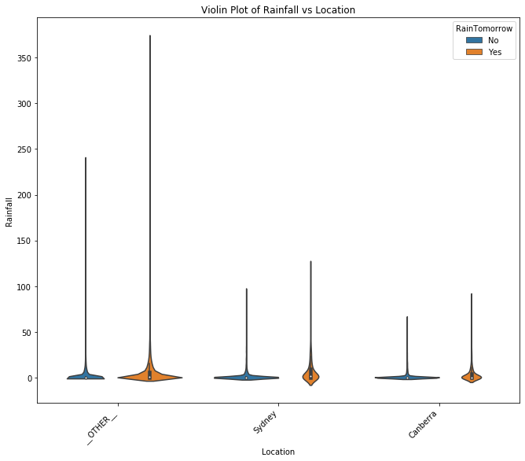
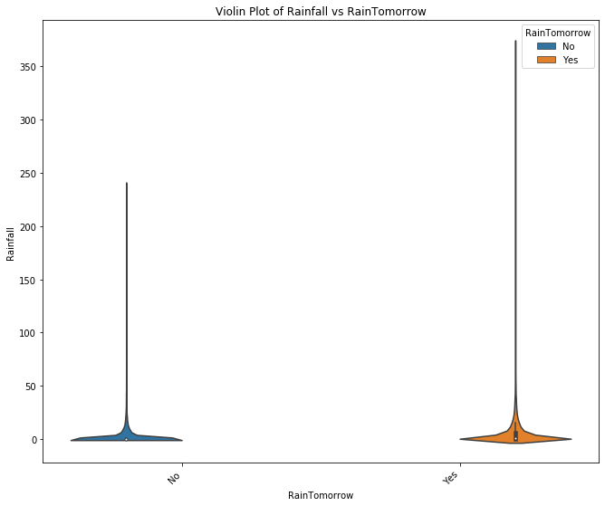
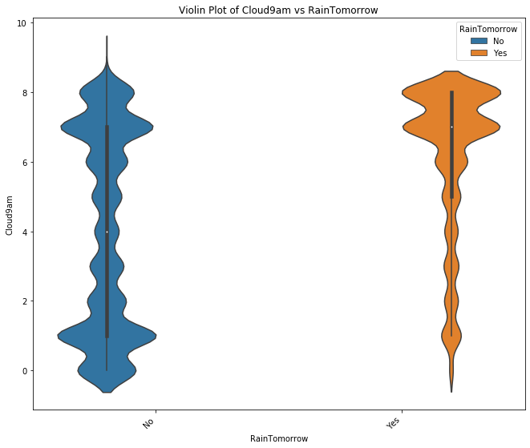

Distributions¶
[1]:
import pandas as pd
import data_describe as dd
[2]:
df = pd.read_csv("../data/weatherAUS.csv")
[3]:
df.head(2)
[3]:
| Date | Location | MinTemp | MaxTemp | Rainfall | Evaporation | Sunshine | WindGustDir | WindGustSpeed | WindDir9am | ... | Humidity3pm | Pressure9am | Pressure3pm | Cloud9am | Cloud3pm | Temp9am | Temp3pm | RainToday | RISK_MM | RainTomorrow | |
|---|---|---|---|---|---|---|---|---|---|---|---|---|---|---|---|---|---|---|---|---|---|
| 0 | 2008-12-01 | Albury | 13.4 | 22.9 | 0.6 | NaN | NaN | W | 44.0 | W | ... | 22.0 | 1007.7 | 1007.1 | 8.0 | NaN | 16.9 | 21.8 | No | 0.0 | No |
| 1 | 2008-12-02 | Albury | 7.4 | 25.1 | 0.0 | NaN | NaN | WNW | 44.0 | NNW | ... | 25.0 | 1010.6 | 1007.8 | NaN | NaN | 17.2 | 24.3 | No | 0.0 | No |
2 rows × 24 columns
Pick relevant columns here
[4]:
df = df[['Location','Rainfall','Cloud9am','WindGustDir', 'RainTomorrow']]
Using Defaults¶
[5]:
dd.distribution(df)





[5]:
[<matplotlib.axes._subplots.AxesSubplot at 0x7fc836a3a9b0>,
<matplotlib.axes._subplots.AxesSubplot at 0x7fc836a3a978>,
<matplotlib.axes._subplots.AxesSubplot at 0x7fc819d12cf8>,
<matplotlib.axes._subplots.AxesSubplot at 0x7fc819d1a208>,
<matplotlib.axes._subplots.AxesSubplot at 0x7fc819c9d7b8>,
<matplotlib.axes._subplots.AxesSubplot at 0x7fc81ac15320>,
<matplotlib.axes._subplots.AxesSubplot at 0x7fc81ad13080>]
Disabling combination of categorical features with many unique values¶
[6]:
dd.distribution(df, max_categories=None)


[6]:
[<matplotlib.axes._subplots.AxesSubplot at 0x7fc81a4394e0>,
<matplotlib.axes._subplots.AxesSubplot at 0x7fc81b1d3358>,
<matplotlib.axes._subplots.AxesSubplot at 0x7fc81a207be0>,
<matplotlib.axes._subplots.AxesSubplot at 0x7fc81ac42860>,
<matplotlib.axes._subplots.AxesSubplot at 0x7fc81bc5a668>,
<matplotlib.axes._subplots.AxesSubplot at 0x7fc81ef0bac8>,
<matplotlib.axes._subplots.AxesSubplot at 0x7fc81e067da0>]
Plotting all variables and combinations¶
[7]:
dd.distribution(df, plot_all=True, max_categories=5)




[7]:
[<matplotlib.axes._subplots.AxesSubplot at 0x7fc81df422e8>,
<matplotlib.axes._subplots.AxesSubplot at 0x7fc81bdec6a0>,
<matplotlib.axes._subplots.AxesSubplot at 0x7fc81e2f9710>,
<matplotlib.axes._subplots.AxesSubplot at 0x7fc81e873710>,
<matplotlib.axes._subplots.AxesSubplot at 0x7fc81e873240>,
<matplotlib.axes._subplots.AxesSubplot at 0x7fc81f985b00>,
<matplotlib.axes._subplots.AxesSubplot at 0x7fc81f993b00>]
Passing keyword arguments to the underlying plotting functions (Seaborn library)¶
[8]:
dd.distribution(df, max_categories=3, hist_kwargs={'vertical': True}, violin_kwargs={'hue': 'RainTomorrow'})







[8]:
[<matplotlib.axes._subplots.AxesSubplot at 0x7fc81eaae8d0>,
<matplotlib.axes._subplots.AxesSubplot at 0x7fc81f9b7e48>,
<matplotlib.axes._subplots.AxesSubplot at 0x7fc81fef4eb8>,
<matplotlib.axes._subplots.AxesSubplot at 0x7fc820485cf8>,
<matplotlib.axes._subplots.AxesSubplot at 0x7fc81f9b7b70>,
<matplotlib.axes._subplots.AxesSubplot at 0x7fc81fe8c908>,
<matplotlib.axes._subplots.AxesSubplot at 0x7fc81fd33908>]